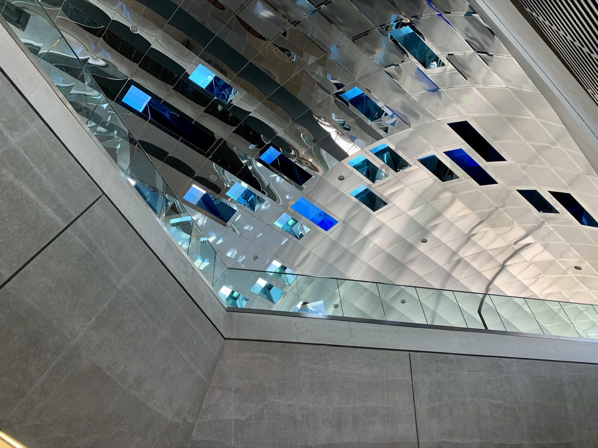
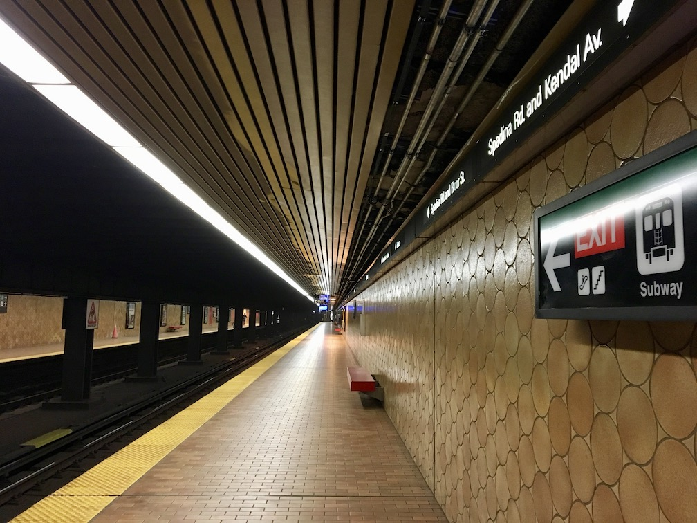

The University-Spadina line is the younger cousin to the original Yonge Line. Originally created to alleviate pressure on downtown, and later extended north to make an expressway more palatable to local residents, the University Line has an interesting mix of architecture and features.
North
Starting in the north end, the latest TYSSE stations are built to the latest standards. The stations are large and airy, and will probably never ever fill up (which, looking at all of the downtown stations, is probably a good thing). I like how each station has a distinctive “theme”, such as VAUGHAN’s lightness, YORK UNIVERSITY’s industrial-concrete, FINCH WEST’s yellow and primary colours, and DOWNSVIEW PARK’s earthen tones.1 Despite this, each station is obviously part of a set, with consistent triangular platform lighting and bare concrete walls (which I dislike, but oh, well). Each station also has its own artwork. I particularly like YORK UNIVERSITY’s LCD panels, which pulse with the movement of air in the tunnels. Subtle, but nice.
Moving south, we have an oddball with Sheppard West (formerly) Downsview. This station was constructed in the ‘90s separate from all the other stations, and boy — does it look nice! There are very few “woah” stations in Toronto, but Sheppard West is one of them. The classy platform with the suave mood lighting and the soaring roof, the exuberance of light as you ascend to the bus platform, and the bus platform that makes you think the TTC Rocket could actually be a rocket. So nice. Public transit/Public art: why do they have to be different?
Spadina
Next, the Spadina stations are blatantly ripped off from Montréal.2 (Even the signs over the door match!) But that’s OK. Montréal looks nice (don’t tell Toronto I said that!) Some of Spadina’s stations are terrible (like Wilson, which is definitely the ugliest station in Toronto), some of them are amazing works of art (like Ellington West and Yorkdale), and some of them are fine (like Glencairn).
Wilson is the ugliest station in Toronto, and generally sucks. It’s way too spread out and looks ugly. Some of the ceiling slats have been removed for repairs, and it makes the station look better. Not good. It basically only exists to get the subway over the 401.
Yorkdale is a stunning work of art that puts the “rocket” in “Toronto Rocket”. Crafted like a lightweight concrete tube capped with a glass cathedral in which trains sit, the station does get a little cold in winter, but is otherwise magnificent. An excellent match to the posh mall next door. Could use some clearer signage and some of the signs are starting to fade, but I’m excited to see what the accessibility renovations will bring.
Lawrence West is like Eglinton West’s nicer cousin. It has a nice mix of bare concrete softened with windows and orange trim. A nice, cozy-feeling station, but still well-lit and with some interesting features. Well done.
Glencairn is odd. The entire station is a tube with no windows, only a skylight, which is an odd decision, and makes for a surprisingly dim station. It’s always feels like evening, which isn’t great. I think some windows could’ve helped. Other than that, the station is very nice, with an easily navigable layout and some sleek lighting and signage. I like it.
UPDATE:
GLENCAIRN has been updated to bring back the coloured skylight it had when it first opened. The ceiling is now made of transparent strips of blue, orange, red, and yellow; which bathe the station in a warm glow that makes the odd lack of windows make more sense. In this case, the station art was critical to the architecture and it has been restored. (Slightly: there is still much scaffolding obscuring the skylight, but that’s sure to change.)
Eglinton West is gorgeous and a monument to Univers. The entire station is just executed so well. The subtle skylights that give light to the tracks, the illuminated signage integrated with the architecture, the play of light and shadow, the giant streetcar art just before you go underground (which is odd considering there are no streetcars in the area), and the soft brick that makes the underground sections feel less harsh. The entire station is just a breath of fresh air at the mouth of the tunnel.3
St. Clair West is a lovely, smooth station, with a nice integration of bus, streetcar, and subway modes. Despite this, the entire station still manages to feel light and airy, with lots of room to roam. Its positioning on a ravine is fun, too. The quirky tiling patters add some interest to an otherwise dull-looking station. (I just think it would look so much better using the Toronto Subway font than Univers.)
DUPONT is an interesting station in that the entire thing feels like it was carved out of a cave. All the corners are curved. Like, all of them. The benches meet the wall at a curve (really comfy, actually!). The ceilings intersect with curves. The hallways are curved. It’s an amazing commitment, and I like how the architects were able to pull it off. There is also some lovely mosaic art in the station. Despite this, the station is starting to show its age: there are cracks in the wall, which disturb the illusion, and I feel like the colour temperature is always off: it’s too cool. This also makes the halls seem dimmer than they should. Despite this, the station still feels great, and will always remind me of summer.
And a short, straight way down the line is SPADINA, another really ugly station (on Line 1, anyway. Line 2 🚌Spadina🚋 is cute). The brown circles on the walls just scream, “why?” And the fact that the station name is only in the strapline is really odd. You can get some nice long-platform shots along here, though. The entrances are really nice, too, with clean lines and soft brown tiles. And one of them is in a house (although doesn’t look it)!
University4
The downtown stations along here are all pretty classic, albeit a little bigger, which is nice. MUSEUM has some really neat walls what with the station name printed in large yellow letters with hieroglyphs, but I feel that the columns may have been overkill. Pretty nice look, though. The bronze colour is nice and unique and should permeate the entire station. The mezzanine doesn’t match the platform at all, and it just looks odd. (Also the top-heavy Sheppard signage clogging up the platform is a blight.) The honesty of the name is nice, too: if you want to get to the museum, this is how you get to the museum.
UPDATE:
It has since come to my attention that there are some issues regarding how Museum looks. I still think it looks OK, but it bothers me that they made such simple mistakes.
Moving south, we have the tubular stations, which are nice. These station keep their original colours, and I like the smooth and soothing blue and grey Queen’s Park uses. St. Patrick goes for a very fitting green on green, which while I am not a fan of green, appreciate. Sadly this is copied from St. George, which I think should have been in a different colour (an interchange station should look more interesting than green-on-green5). Sadly, these stations have had a strip of wall covering missing for about four years now for repairs, which really kills the look. It would be great if they could go back.
And the remaining buddies, St. Andrew and Osgoode6 are very nice stations, indeed. While they do not retain their original tiling, they have some very nice glossy wall panels to replace it that are a modern take on the original colours: St. Andrew in (fittingly) blue, and Osgoode in cream. St. Andrew is a very blue station: I think they need a warmer colour of lights (I have heard it is an early LED trial installation, and in later installations decided on a warmer colour. I wonder if this explains Dupont?). Osgoode is very nice, though.
Epilogue
Well, that concludes Line 1, my very favourite line. Line 1 has some interesting things to explore, and the University Line has the widest array of styles and colours of anywhere in the TTC. Definitely worth looking out for!
-
Fun fact: Highway 407 is the deepest station on the network. It’s built under a river (much like York Mills, the second-deepest station on the network). ↩
-
Which could be ripped off from Paris ↩
-
Fun fact: the gap between Eglinton West and St. Clair West is the longest on the network. ↩
-
If you sit facing the opposite direction the train is travelling, and press your face agains the glass, you can see the tracks leading down to Line 2 west of St. George or the tracks leading in to St. George, depending on what direction you’re travelling. Pretty neat. ↩
-
They could go for yellow-on-grey/green and green-on-grey/green for each line. ↩
-
Fun fact: St. Andrew and Osgoode are the two closest stations on the network, at just over a train length (125m)7 apart. ↩
-
1 platform is 150m ↩